Does culture change how people experience online voting?
Many digital platforms give every user the same design. For online voting, every citizen needs an interface that is usable, clear and trustworthy. Using Hofstede's cultural dimensions, I looked at two of them, Power Distance and Uncertainty Avoidance, and asked whether an interface adapted to these values works better than a culturally neutral one.
- My roleI designed, built and tested both prototypes
- MethodThree phases: literature, design with expert and pilot testing, then a main study
- MeasuresSUS for usability, UEQ+ for perspicuity and trust, CVSCALE for cultural values
- ToolsHTML, CSS, JavaScript, IBM SPSS
What I built: two versions of the same voting flow
Both prototypes had the same steps: register, accept the terms, choose a candidate, review, and confirm. The difference was in the design. The Adaptive UI used an official seal, a formal tone, step-by-step guidance, security badges and a confirmation receipt, which match higher Power Distance and higher Uncertainty Avoidance.
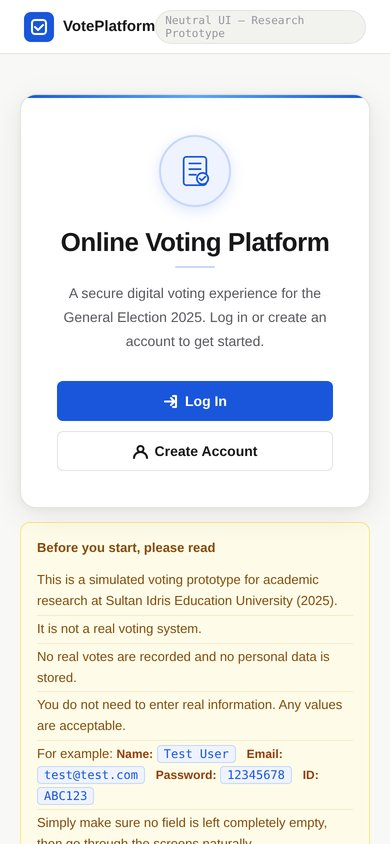
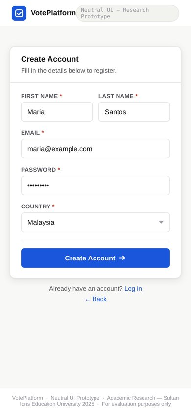
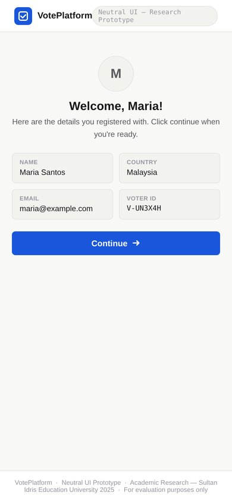
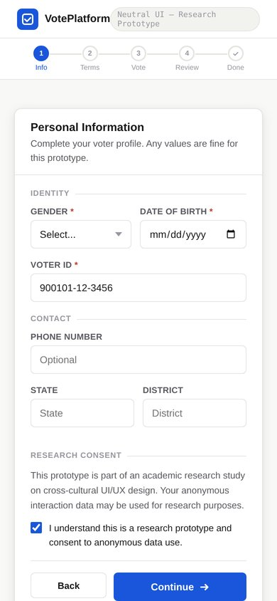
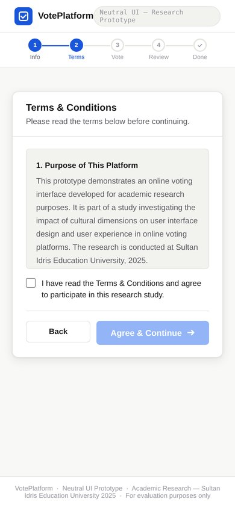
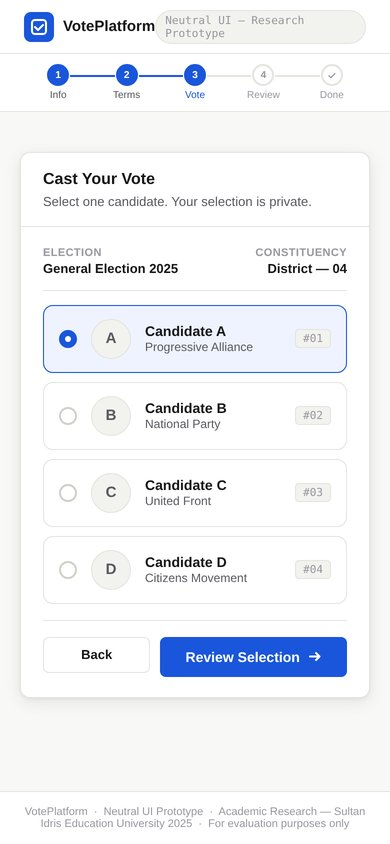
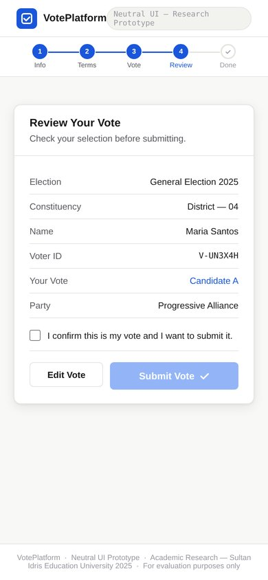
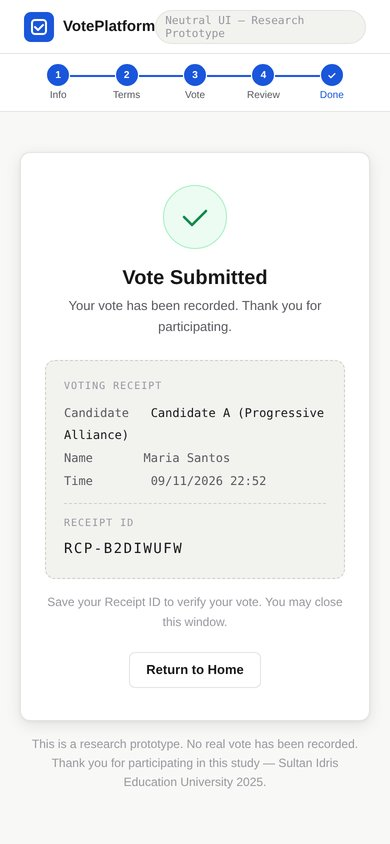
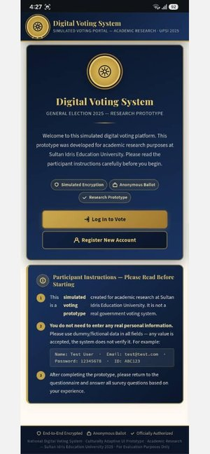
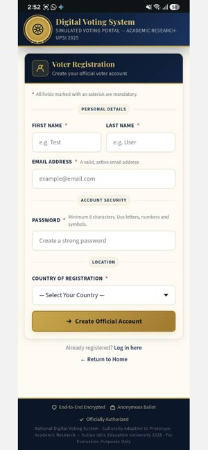
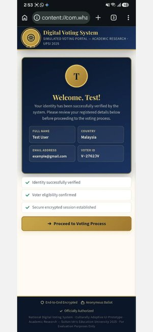
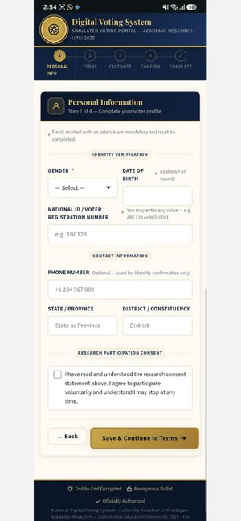
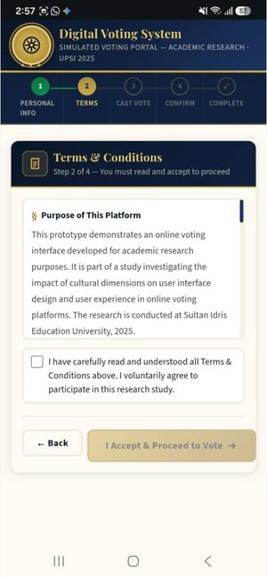
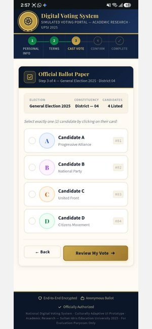
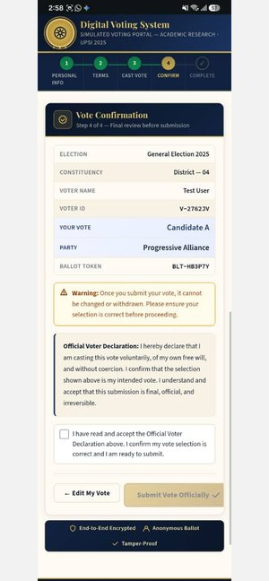
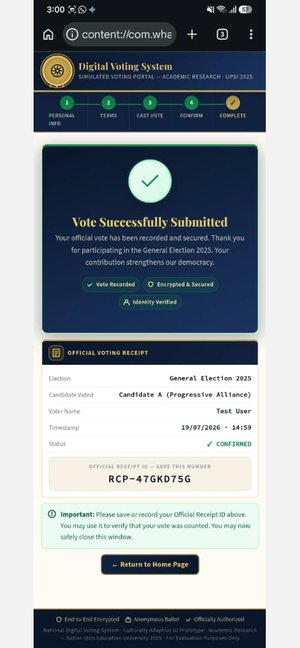
Use the arrows or slide left and right to see all eight screens.
What I found
Participants used both prototypes, in a random order, and rated the Adaptive UI higher on all three outcomes. The differences were large for trust and perspicuity (how easy the interface is to understand) and medium for usability.
Usability (SUS, out of 100)
Perspicuity (UEQ+, scale from -3 to +3, shown from 0)
Trust (UEQ+, scale from -3 to +3, shown from 0)
Which prototype people preferred, by country
The benefit was not the same everywhere. It was large for participants from Bangladesh and India, partial for Malaysia, and not significant for China. People with higher Uncertainty Avoidance gained more from the Adaptive UI in usability and perspicuity.
What it adds
A step-by-step framework to evaluate cultural differences in a user interface, tested in this study, and evidence-based design guidelines. The main lesson is that cultural adaptation can improve online voting, but how much it helps depends on users' cultural values and country, so one adapted design should not be assumed to fit everyone.
See the five steps of the evaluation framework
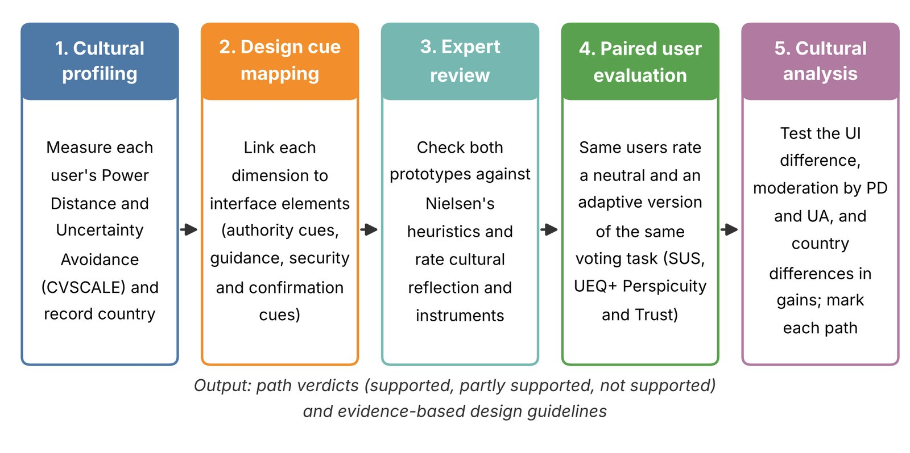
Limits of this study
Both designs were prototypes, not a real election. Participants were recruited through networks and social media, and most were young, educated and used to digital tools, with 25 people per country. The Adaptive UI changed many things at once, so the study cannot say which single change helped. Some trust questions may reflect the on-screen security labels. The Adaptive UI also looked more polished, which may have raised its ratings. All data came from questionnaires, with no task time or error counts. Everything was in English, which was a second language for most participants. Only two cultural dimensions were studied, and each person used each design once.